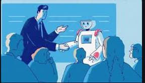
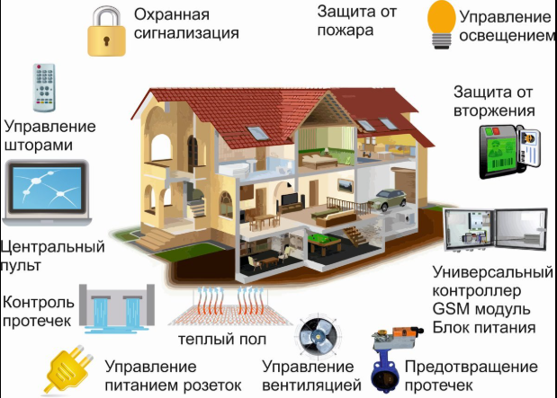
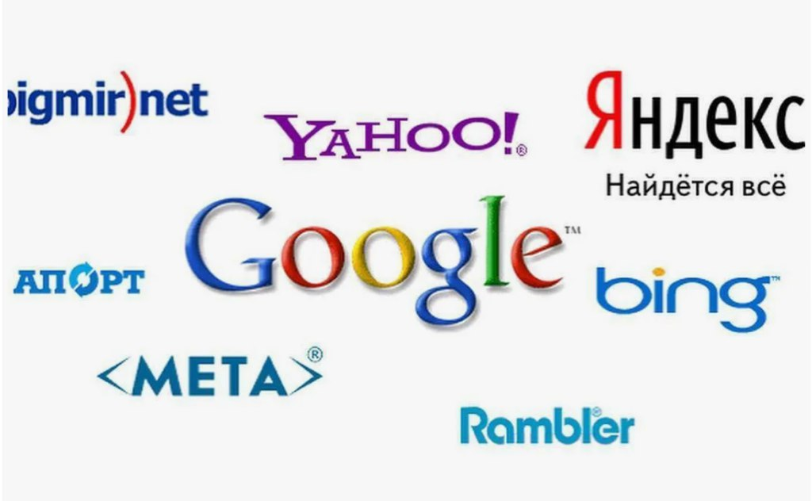

Веб альбом на тему адаптивные технологии
Адаптивные информационные технологии — это инновационные методы и подходы к обработке и передаче информации, которые адаптируются и оптимизируются под различные условия и требования пользователей. Они позволяют эффективно использовать информацию и обеспечивать её доступность и удобство использования для широкого круга пользователей.

платформы адаптивного обучения — технологии, которые позволяют персонализировать учебный процесс, подстраивая его под нужды конкретного ученика.К нему входят:платформы На основе машинного обучения,Усовершенствованные алгоритмические,На основе правил,На основе дерева решений.
Некоторые инновационные методы обработки и передачи информации, которые адаптируются под разные условия и потребности пользователей и обеспечивают эффективное использование и удобный доступ.Оно нужно для обработки информации,к примеру:Искусственный интеллект и машинное обучение.Для передачи информации,к примеру:Оптические технологии.

Адаптивные технологии умного дома.Устройства, которые автоматически регулируют освещение, температуру и безопасность в зависимости от поведения и привычек жильцов.

поисковые системы — программы, которые позволяют искать информацию в интернете. Они сканируют, индексируют и организуют веб-страницы, учитывают их содержание, популярность и другие факторы, чтобы выдавать пользователю релевантные результаты поиска.Некоторые виды таких систем:поисковые системы общего назначения,вертикальные поисковые системы,визуальные поисковые системы.
Адаптивные информационные технологии очень помогают человеку в разных сферах,с гаджетов заканчивая до медицинских технологиях.В современном мире без таких технологий будет не очень хорошо адаптироваться под разные работы,а технологии помогают справиться с разными работами в разных сферах.